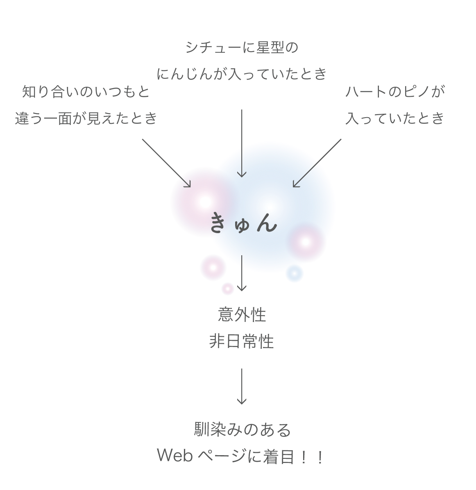

くりっきゅん
ABOUT
| 種類 | PC, Chrome拡張 |
|---|---|
| 使用ツール | photosop, illustrator |
| 使用言語 | HTML, CSS, JavaScript |
| 役割 | 立案, コンセプト, デザイン, コーディング |
| 制作期間 | 2016年12月 約2週間 |
| 制作人数 | 2人 |
| きっかけ | GIRLS HACK Uへの参加。 |
| 開発テーマ | 「きゅん」。あなたが「きゅん 」と感じるものであれば、なんでも構わない。 |
CONCEPT
インターネットには、
興味をさらに「深める」きっかけが多くあります。
しかし、「広げる」きっかけはあまりありません。
本を購入するとき、
書店では、欲しかった本と同じ分野の本だけでなく、
思わぬ本と出会うときもあります。
興味を「深める」と「広げる」の両方があります。
しかし、ネット通販では、
思わぬ本との出会いはあまりありません。
興味を「広げる」きっかけが少ないです。
物事の意外な一面を知り、興味を「広げる」、
それと同時に、
自分の知らなかった自分の一面にも気づくきっかけを作りたいと思い、
これを作成しました。
PRODUCT

知り合いのいつもと違う一面が見えた時、
クリームシチューにハートのにんじんが入っていた時、
思わず「きゅん」としませんか。
この時に感じる「きゅん」が、
私たちの「きゅん」であると定義しました。
この「きゅん」は、日常生活に溶け込んでいる「さりげない意外性」「紛れ込んだ非日常性」だと考えました。
そこで、見慣れてる、つまり意外性の少ないWebページに着目しました。
MOVIE
DESIGN & FUNCTION
いつものWebページを何気なく見ていると、意識していなかったところからキラキラが溢れ出すChrome拡張を制作しました。
ここには意外性が2つ、盛り込まれています。
1. 意識していなかった場所に目がいってしまう意外性
Webページでは、自分が押すリンク以外は普段意識することがほとんどありません。例えば、いつもYahoo！のトップページを開いたら、まず天気を見る人がいるとします。きっとその人は、トップページでは、天気へのリンク以外は見ていません。私もそうです。意識していなかったところから、キラキラが溢れてくることにより、意識してしまう。これが意外性であり、「きゅん」であると、私たちは考えました。2. 昔を彷彿とさせる意外性
このくりっきゅんの利用者には、20~40歳の女性を想定しています。私たちが昔見たセーラームーンのようなアニメは、子供の頃は憧れを抱き見ていましたが、大人になるとまったく見なくなります。彼女たちの存在を思い出すことは、私たちにとって非日常です。くりっきゅんには、彼女たちを彷彿とさせるデザインを盛り込みました。また、心理学の視点から見ると、女性は子供の頃は大人っぽい印象を与える水色を好む傾向があり、大人になると幼い印象を与えるピンクを好む傾向があるそうです。その理由は、子供の頃は大人っぽくなりたいという気持ちが強く、大人になると反対に可愛らしくなりたいという気持ちが出てくるためだと言われています。くりっきゅんでは、子供の頃を思い出させるピンク色を中心にしました。


機能
- リンクから光が溢れてくる。
- くりっくするとハートが浮かび上がる。
デザイン
| リンク | 意識していなかったリンクから、光が溢れてくる意外性。 |
|---|---|
| キラキラ | セーラームーンのようなアニメの変身シーンに溢れるキラキラをモチーフに。 |
| ハート | 変身シーンのコスチュームをモチーフに。 |
| ピンク色 | 昔を彷彿とさせる、幼い印象を抱かせる色。 |